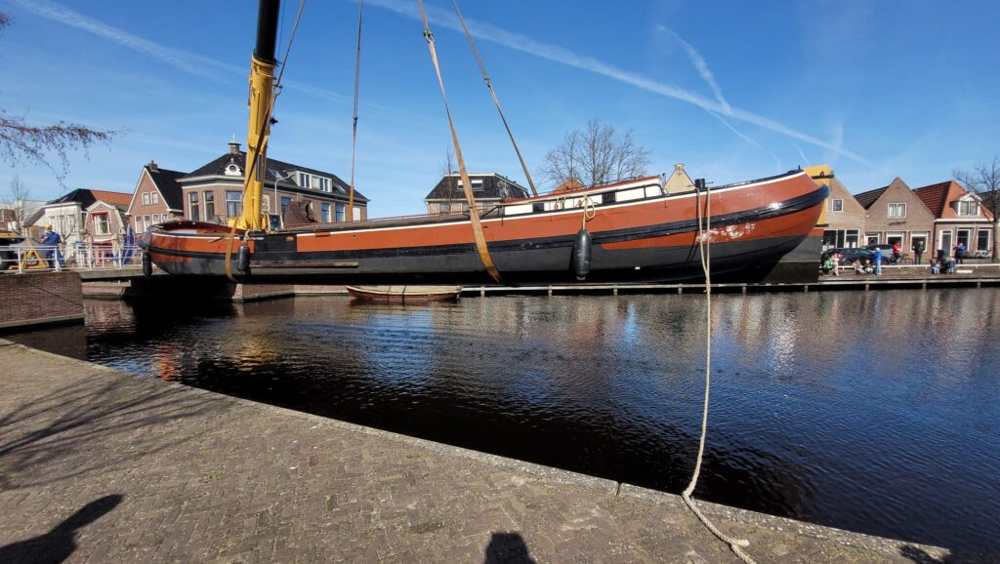
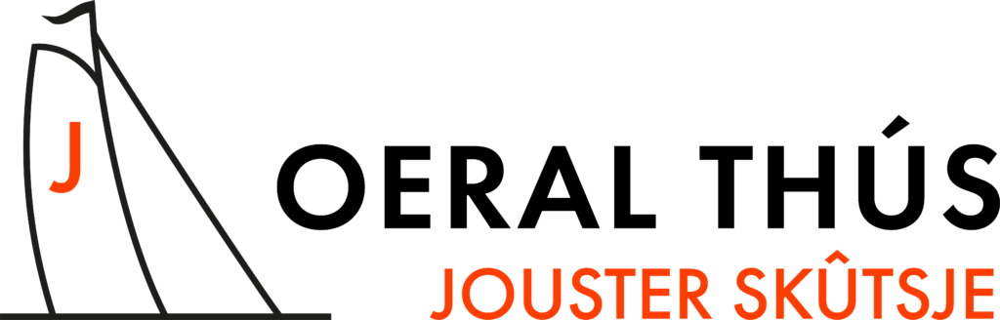
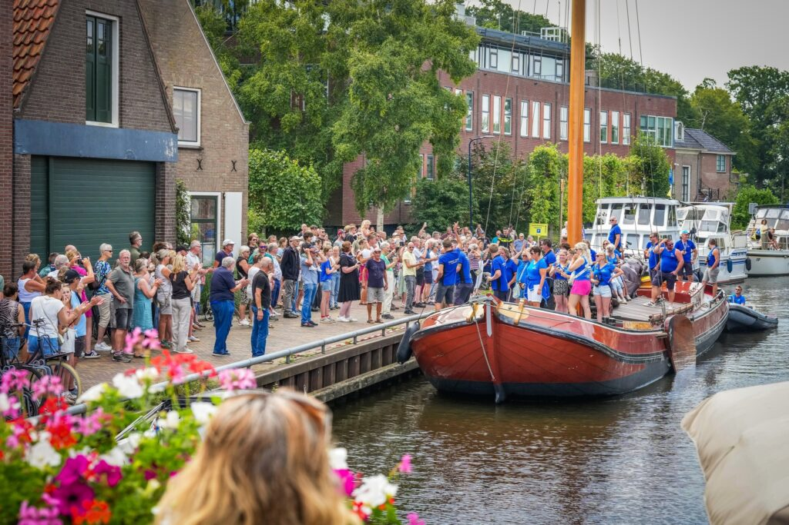
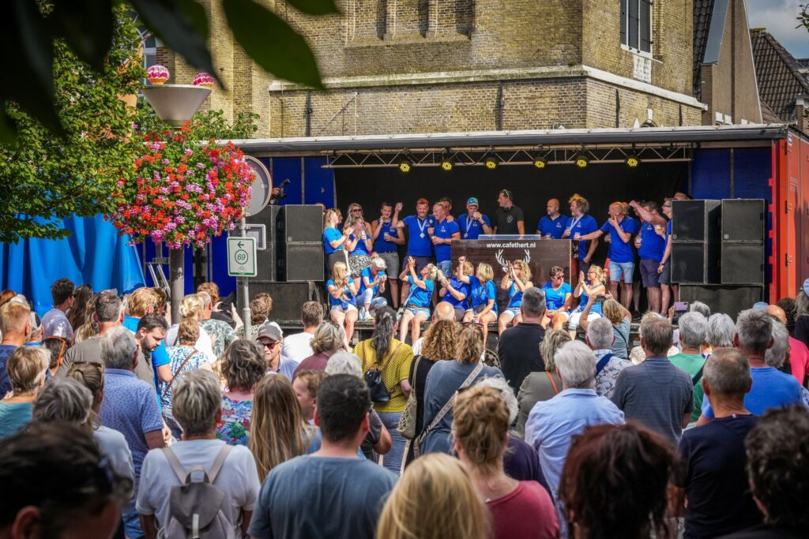

VARIANT 1
Wedstrijdcentrale
Sport en broadcast. Donkere hero, oranje live-band, de hele wedstrijdkalender als middelpunt.

/ design variantenv0.3 · 12 varianten · juni 2026
Ronde 2 · blauw/oranje · echte foto's
De kleuren komen uit het logo, blauw en oranje. Echte foto's van het schip en de bemanning. Agenda en nieuws staan in elke variant centraal, met de complete SKS wedstrijdkalender 2026. Twaalf heel verschillende sferen. Klik een variant om hem in een nieuwe tab te openen.

Wedstrijdcentrale
Sport en broadcast. Donkere hero, oranje live-band, de hele wedstrijdkalender als middelpunt.

DE KRANT
Nieuws voorop. Krantenmasthead, hoofdartikel met foto, agenda als vaste zijkolom.
Poster
Grafisch en stoer. Enorme letters, kleurvlakken, een zeil-vorm in de foto, agenda als poster-lijst.
Helder
Licht en overzichtelijk. Ronde kaarten, agenda en nieuws naast elkaar, allebei even prominent.
Op het water
Filmisch en sfeervol. Schermvullende foto met een zwevende agenda-kaart eroverheen.
Logboek
SCHEMA · KLASSEMENT · DATA
Data en tabellen. Het wedstrijdschema, klassement en nieuwsfeed als overzichtelijk dashboard.
100
Tijdlijn
Honderd jaar als spil. Verticale tijdlijn van 1924 tot het seizoen 2026, dat uitmondt in de agenda.
Op de kaart
De SKS route geplot op de Friese meren. Agenda gekoppeld aan geografie, dag voor dag.
Oeral Thús.
Diptych
VAST + SCROLLEND
Split-screen. Links het schip vast in beeld, rechts scrollen agenda, nieuws en het schip.

VARIANT 10Clubidentiteit. Wapen, programma als fixtures, bemanning als selectie. Sportclub-gevoel.
Oeral
Thús
Brutalist. Zwart raster, monospace, harde randen. Een zine met blauw, oranje en echte foto's.
Wimpels
Seinvlaggen als taal. Elke wedstrijd zijn eigen vlag, vrolijk en nautisch, strak in blauw/oranje.
Alle foto's en het logo komen van jousterskutsje.nl en zijn echt. De agenda is de officiële SKS wedstrijdkalender 2026 (18 t/m 31 juli) plus de foarwedstriden en het na-seizoen. Kies een richting, dan werk ik die uit tot de volledige paginaset en daarna naar WordPress.